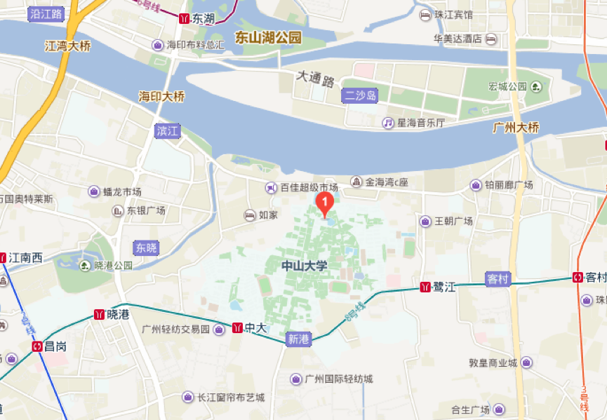
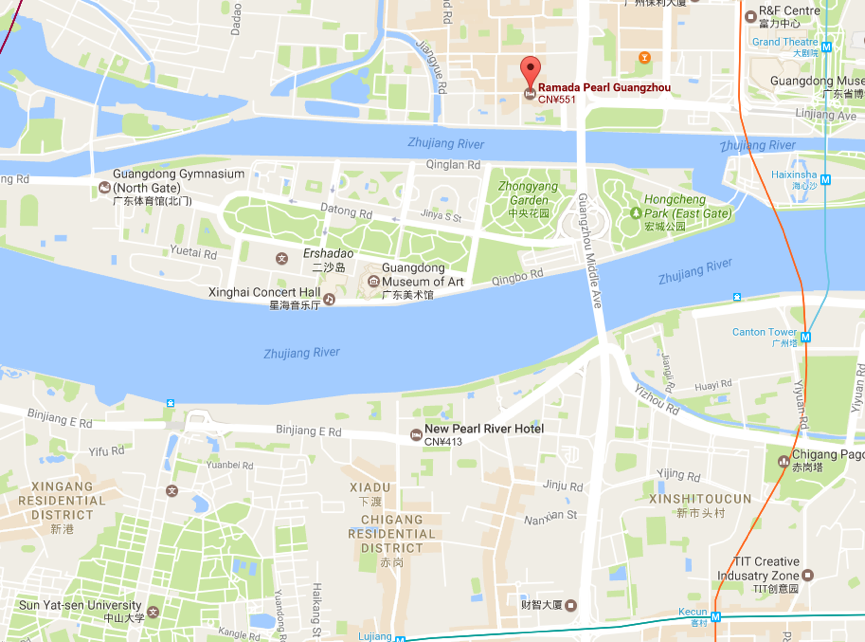
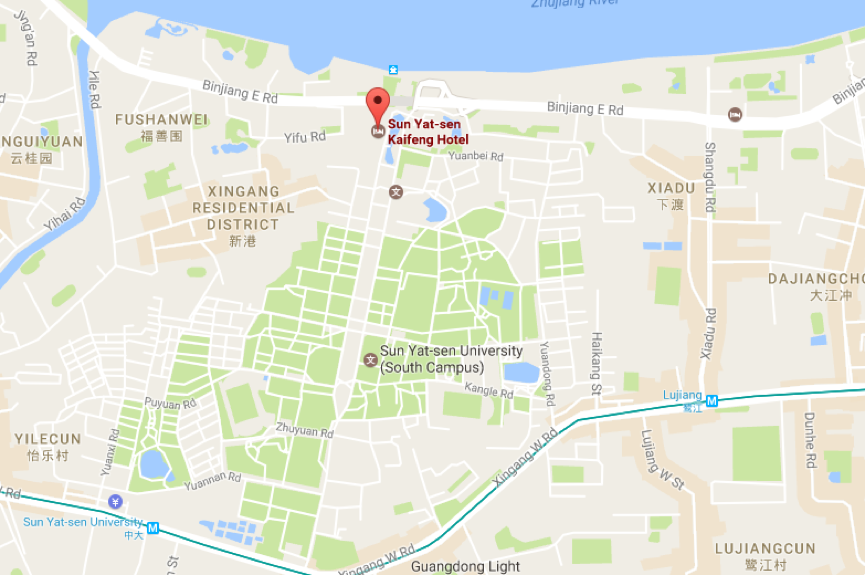

Guide
Address:
MBA Building, Sun Yat-sen Business School, Sun Yat-sen University, No.135 Xingang Road (W), Haizhu District, Guangzhou.Zip Code:
510275Tips for visitors:
1. From Guangzhou Baiyun International Airport:
(1) Taking a taxi directly to the MBA Building of Sun Yat-sen Business School (about 60 minutes).(2) Taking the Airport Line 10 to New Pearl River Hotel (about 60 minutes), walking to the building (about 15 minute).
(3) Taking the metro from Airport South Station to Kecun Station (客村站) by Line 3 (in the direction of Panyu Square Station), and transferring to Sun Yat-sen University Station by Line 8 (in the direction of Fenghuang Xincun Station), Exit A (about 90 minutes), and walking to the building (about 20 minutes).
2. From Guangzhou East Railway Station:
(1) Taking a taxi to the MBA Building of Sun Yat-sen Business School (about 30 minutes) .(2) Taking the metro from Guangzhou East Railway Station to Kecun Station (客村站) by Line 3 (in the direction of Panyu Square Station), and transferring to Sun Yat-sen University Station by Line 8 (in the direction of Fenghuang Xincun Station), Exit A (about 20 minutes), and walking to the building (about 20 minutes).
3. From Guangzhou South Railway Station:
(1) Taking a taxi to the MBA Building of Sun Yat-sen Business School (about 40 minutes).(2) Taking the metro to Changgang Station （昌岗站） by Line 2 (in the direction of Jiahewanggang Station) , and transferring to Sun Yat-sen University Station by Line 8 (in the direction of Wanshengwei Station), Exit A (about 40 minutes), and walking to the building (about 20 minutes).
4. From Guangzhou Railway Station:
(1) Taking a taxi to the MBA Building of Sun Yat-sen Business School (about 30 minutes).(2) Taking the metro from Guangzhou Railway metro Station to Changgang Station（昌岗站）by Line 2 (in the direction of Guangzhou South Railway Station), and transferring to Sun Yat-sen University Station by Line 8 (in the direction of Wanshengwei Station), Exit A (about 30 minutes), and walking to the building (about 20 minutes).


广州市珀丽酒店(Guangzhou Rosedale Hotel)
Address:
No. 348 Jiangnan Avenue, Haizhu District, Guangzhou, Guangdong, ChinaPrice:
400 RMB (breakfast included)

广州凯旋华美达大酒店 (Ramada Pearl Hotel Guangzhou)
Address:
No.9 Mingyue Yi Road, Guangzhou Avenue, Yuexiu District Price:
575 RMB (breakfast included)

广州中大学人馆(中大凯丰酒店) (Sun Yat-sen University Kaifeng Hotel)
Address:
1/F Information Technology and Culture Center, North Gate of Sun Yat-sen University, Binjiang Road (E), Haizhu District Price:
775 RMB (breakfast included)
